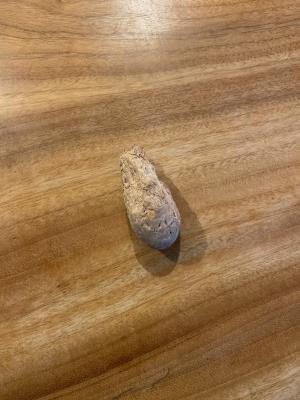
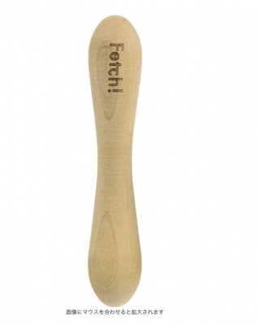

ですとろいやーひましゃん 2
今日も寒かったですね〜。
今日の散歩は海の公園に行って来ました。
ひまりさんは、なんかいろんな物に興味があって
あっちこっちくんくんして歩いて、ひな子さんとは全然違います・・・。
海の公園の最近のひましゃんブームは海を眺めることですかね〜(笑)。
風が強くて大きな波が立っていると、耳をぴーんって立てて
「なんだろ ? あれ、なんだろ ?? 」て感じで、
いつまでも海を眺めています。
さて、コレはなんでしょう〜。
↓

・・・ぱっと見、う〇こにしか見えないんっすけど〜(汗)。
実はコレ、ひまりさんに1ヶ月ほど前に買ってあげた
木のおもちゃの成れの果てデス(笑)。
誤飲の危険な大きさにまでなっちゃったので撤去となりました・・・。
長く楽しめるって評判のおもちゃだったのに1ヶ月しかもたなった(泣)。
いや・・・数々のおもちゃをあっという間に壊してきた
ですとろいやーひましゃん「1ヶ月ももった」と言った方がいいんかな ?
ちなみに元の姿がこちら(笑)。
↓

長さが20センチくらいはあったかしら〜。
あんまり簡単にかじれちゃうおもちゃは長く楽しめないし
もうちょっと固いおもちゃを探そうかと思ってるんですが・・・
なんかネットの情報を見ていると、あんまり固い物を与えると
歯が欠けるって報告もあったりして迷います・・・。
今のところ候補として上がっているのは
鹿の角のおもちゃと、無害なプラスチックのおもちゃ。
どっちも噛む力が強い子用のおもちゃです。
あとは、引っ張りっこのできる丈夫なロープのおもちゃ、
ロープなんかすぐかじって壊しちゃう、ですとろいやーひましゃんでも
楽しめる、なんかいいおもちや、ないかな〜。


コメント(2)
フェッチはひづめより柔らかいから大丈夫だろうと思ったんですが駄目でした。
今のコの時に聞いたんですが、動物病院の看護師さんによると「犬の顎の力は強いですが、歯そのものは人の歯より弱いので硬いものはＮＧです。判断基準としてハサミで切れないものはやめたほうがいいです。」とのこと。
ちなみにプラスチックおもちゃで破折したコも知っています。
余計なお世話だと思いましたが経験済みで心配になりましたので(;^_^A
でもフェッチは柔らかくて安全だと思ってましたが歯が欠けちゃったとは・・・意外となんでも危険なのかもしれませんね。
実はすでに先日「マローボーン」というおもちゃを購入しました。
おもちゃの形状が歯に引っかからず、歯の横っ面でかじっているような、すべっているような(笑)感じになってます。
見ているとそこまで熱中してかじっている様子はないんですが、気を付けて見ているようにします。ありがとうございました。